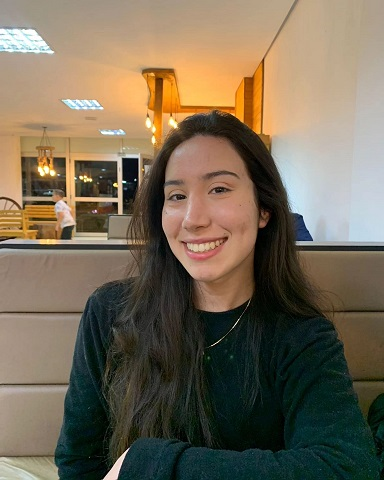

Olá! Meu nome é Maria Carolina
Sou entusiasta da tecnologia, tenho 18 anos e gosto de desafios e trabalhar em equipe. Atualmente trabalho como estagiária de ti. Planejo me especializar em JavaScript, HTML e CSS.
 Instagram
Instagram
 Github
Github

Sou entusiasta da tecnologia, tenho 18 anos e gosto de desafios e trabalhar em equipe. Atualmente trabalho como estagiária de ti. Planejo me especializar em JavaScript, HTML e CSS.
Meu nome é Maria Carolina Mendes Pegoraro, sou natural de Lagoa Vermelha, Rio Grande do Sul. Atualmente, estou cursando Ciência da Computação na Atitus Educação, juntamente com a minha graduação venho desenvolvendo meu conhecimento na plataforma Alura, onde tenho desenvolvido habilidades em programação, desenvolvimento de software e análise de dados. Recentemente, ingressei no mercado de trabalho como estagiária no segundo semestre, onde estou tendo a oportunidade de aplicar meus conhecimentos em projetos práticos e aprender com profissionais experientes da área. Estou entusiasmada com as possibilidades que o futuro reserva e sempre em busca de novos desafios para aprimorar minha formação.

Possuo um conhecimento básico em JavaScript, o que me permite entender e desenvolver pequenas aplicações. No entanto, estou comprometida em aprimorar minhas habilidades nessa linguagem e em outras tecnologias relacionadas.
.png)
Tenho um conhecimento básico em HTML, que me permite estruturar páginas web simples e criar layouts funcionais. No entanto, estou determinada a aprofundar minhas habilidades nessa linguagem fundamental para o desenvolvimento web.

Possuo um conhecimento básico em CSS, o que me permite estilizar páginas web e criar layouts visualmente atraentes. No entanto, estou determinada a aprimorar minhas habilidades nessa linguagem essencial para o design web.

Tenho um conhecimento básico em Python, o que me permite desenvolver scripts simples e resolver problemas de programação.além de explorar bibliotecas populares como Pandas, ja criei alguns projetos básicos em python e planejo me aprimorar cada vez mais.

Possuo um conhecimento básico em Java, que me permite desenvolver aplicações simples e entender conceitos fundamentais de programação orientada a objetos. Também ja desenvolvi alguns projetos básicos em java, como um cadastro de veiculos e estou determinada a aprimorar minhas habilidades nessa linguagem amplamente utilizada.